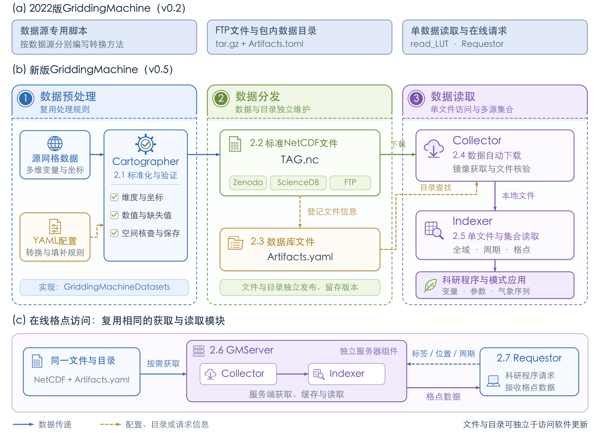

<!doctype html>
<html lang="zh-CN">
<meta charset="utf-8">
<meta name="viewport" content="width=device-width,initial-scale=1">
<title>图1三版风格对照</title>
<style>
body{margin:0;background:#eef1f6;color:#24374d;font:16px/1.65 system-ui,sans-serif}header{position:sticky;top:0;z-index:2;background:#fffffff5;padding:18px 26px;border-bottom:1px solid #d2dce9}h1{font-size:22px;margin:0 0 10px}nav{display:flex;gap:8px;flex-wrap:wrap}button{padding:8px 17px;background:white;border:1px solid #bdcbe0;border-radius:18px;color:#325c91;cursor:pointer}button[aria-pressed=true]{background:#326cb2;border-color:#326cb2;color:white}p{margin:10px 0 0}main{padding:22px;display:grid;gap:22px}main.compare{grid-template-columns:repeat(2,minmax(0,1fr))}article{background:white;padding:18px;border:1px solid #d2dce9;border-radius:12px;min-width:0}h2{font-size:18px;margin:0 0 12px}img{width:100%;height:auto;display:block}.hidden{display:none}@media(max-width:1000px){main.compare{grid-template-columns:1fr}}
</style>
<header>
<h1>图1：彩色组件与简洁风格对照</h1>
<nav aria-label="选择对照版本">
<button aria-pressed="true" data-mode="illustrated">彩色组件版</button>
<button aria-pressed="false" data-mode="systems">上一版简洁风格</button>
<button aria-pressed="false" data-mode="original">替换前原图</button>
<button aria-pressed="false" data-mode="compare">新旧方案并排</button>
</nav>
<p>彩色组件版沿用上一版流程，调整配色、图标和卡片层次。彩色组件版已用于正式稿，MD、Word与Overleaf同步。</p>
</header>
<main>
<article id="illustrated"><h2>新增：彩色组件版</h2></article>
<article id="systems" class="hidden"><h2>上一版：简洁风格</h2></article>
<article id="original" class="hidden"><h2>替换前原图</h2></article>
</main>
<script>
// Toggle comparison figures without changing the manuscript or its active assets.
document.querySelectorAll('button').forEach(button=>button.addEventListener('click',()=>{
  const mode=button.dataset.mode;
  document.querySelectorAll('button').forEach(item=>item.setAttribute('aria-pressed',String(item===button)));
  document.querySelector('main').classList.toggle('compare',mode==='compare');
  for(const id of ['illustrated','systems','original']){
    const visible=mode===id||(mode==='compare'&&id!=='original');
    document.getElementById(id).classList.toggle('hidden',!visible);
  }
}));
</script>
</html>
